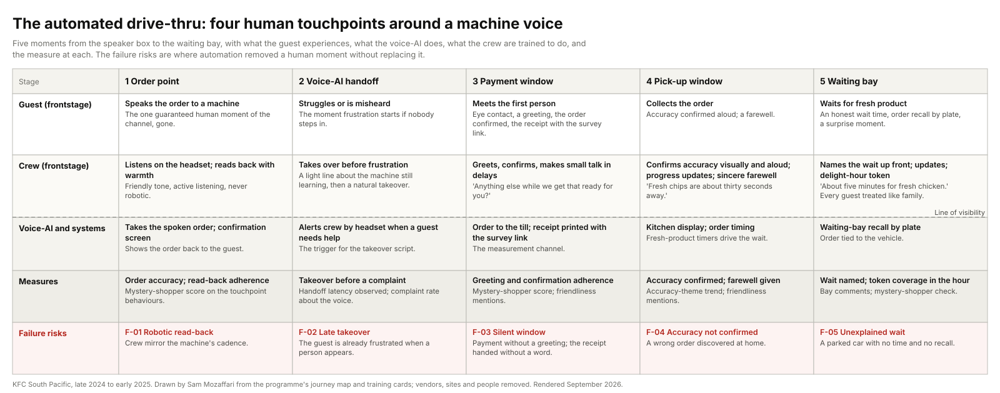
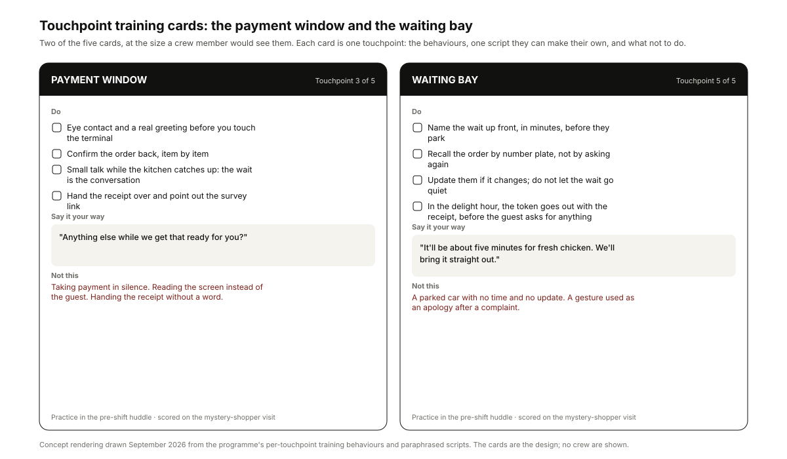
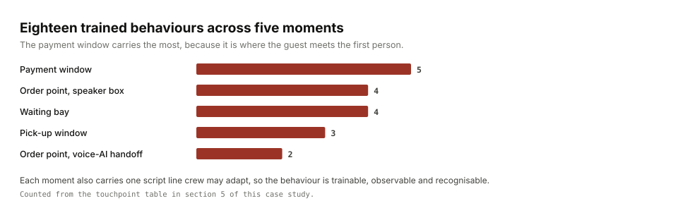
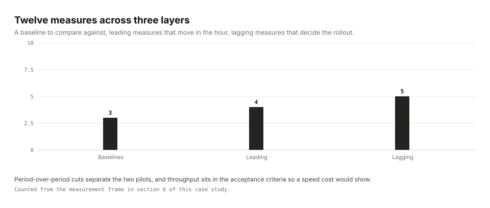
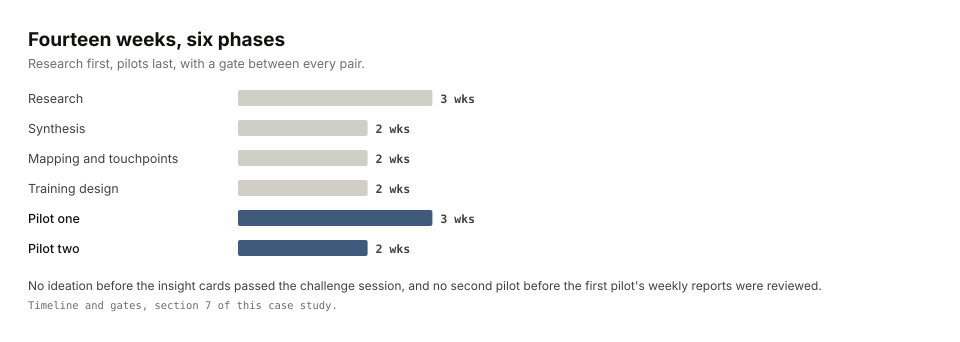

A dense drive-thru footprint with a multi-year automation agenda. A voice-AI order taker was live across a wave of drive-thrus: it takes the spoken order, shows it on a confirmation screen, and alerts crew by headset when a guest needs help. A receipt-based survey collected drive-thru feedback.
My roleExperience Designer leading the design work in the programme core.
CollaboratorsData analysts; an operations sponsor; area coaches; restaurant and assistant managers; crew in the pilot restaurants; marketing.
ConstraintsSix hard filters on every concept: no new technology, no speed impact, no increase in base labour, low complexity, no margin erosion, and a four-week implementation horizon per pilot.
Key decisionThis is a role and behaviour problem, not a technology problem. The voice-AI does not need removing; the crew need to know where they are now the experience, and how to be it.
DeliveredFour named touchpoints with a trained behaviour for each, five training cards (the four touchpoints plus the order-point takeover for when the voice-AI mishears) and their videos, recognition mechanics and a two-arm pilot design.
PilotedBoth pilots were run by the programme core with weekly measurement, in matched store pairs with a control group. Expansion to counter, delivery and self-service was proposed; the rollout sat with operations.
MeasuredThe satisfaction figures are held by the business. What the case reports is the qualitative reading of the pilot comments: guests wrote about the person, not the token, and the clearest effect was fewer negative experiences.
Shown hereFigure 2 was redrawn in September 2026 from the programme's training behaviours and paraphrased scripts.

{kind=link}
The problem
The brief, in the business's own words, was to balance technological advancement with meaningful human interaction: the new drive-thru technologies enhanced efficiency and risked diminishing the personal touch central to the brand. The data underneath it said drive-thru experiences often lacked personal touch and meaningful interaction. The channel had replaced the one guaranteed human moment with a machine voice, and team members had no behavioural script for their new role.
The reframe was blunt. The voice-AI was staying. What was missing was a design for the human half: where people now appear in the journey, what they do there, and how they are recognised for doing it. The question that carried the work came from leadership: what do we want to be famous for?
Service was already the strongest driver of satisfaction in the guest comments before any intervention ran. A large share of the verbatim comments that praised anything praised a crew member. The programme's job was to make that reliable rather than accidental.
What I did
- Evidence review, not new fieldwork. The window was too tight for interviews, so the verbatim guest comments became the primary evidence, drawn from guest feedback that runs to hundreds of thousands of responses, comments and ratings. Beside them sat a competitor scan of how other brands handled the automation-versus-hospitality tension and desk research on automation and social disconnection in service settings.
- Mapped the automated flow end to end, guest side and crew side, from the ground-loop trigger to the waiting bay, to find where the human moments still lived.
- Synthesised insight cards in a three-part syntax (observed behaviour, root cause, design implication), challenged in a wall session with operations and marketing.
- Designed the four touchpoints and the ritual: per-touchpoint training cards, poor-versus-good training videos, a pre-shift poster and run-sheet, bingo cards for the trained behaviours, a satisfaction leaderboard and branded affirmation cards.
- Designed two sequenced pilots. Pilot one rolled the training system across a set of restaurants. Pilot two ran a two-arm experiment during one pre-selected hour a day: a giveaway arm against a zero-cost handwritten-note arm, in matched store pairs with a control group, with the tokens given to crew before guests.
What the research found
The human moments moved; they did not disappear. The order point, the voice-AI handoff, the payment window, the pick-up window and the waiting bay were where a person could still change the experience, and none had a behaviour written for it. Four of the five became named touchpoints; the order point belongs to the machine, and its card carries the takeover script for when the voice-AI mishears.
The handoff was the hinge. The voice-AI alerted crew by headset when it struggled, but nothing said when to step in. Too late, and the guest was already frustrated when a person appeared.
The gift was not the point; the interaction was. In the delight hour, guests wrote about the person who handed the token over, not the token. That finding shaped the rollout recommendation more than any lift did, because it meant the cheaper arm was the one that worked.
Prevention beat delight. Read from the guest comments across the pilot, which ran about twelve weeks, the programme's clearest effect was fewer negative experiences rather than more ecstatic ones, and prevention is the cheaper win. The satisfaction figures themselves are held by the business.
A lift measured in a handful of pilot restaurants that knew they were being watched carries novelty and Hawthorne exposure. Sustained measurement became a written condition of any wider rollout, carried in the results paper rather than a footnote.
Three decisions
Design around the machine, not against it
Evidence. The automation agenda was set; the feedback showed crew still drove satisfaction wherever they appeared.
Alternative considered. Argue for a human order taker at peak. Rejected: outside the programme's authority, and the evidence did not need it.
What we did. Named the four touchpoints where humans now matter most and wrote the behaviour for each, including the takeover script for when the voice-AI mishears.
A scripted-but-ownable ritual, inside six hard constraints
Evidence. Crew confidence for customer interaction was the weakest crew-survey item; field capacity and margins were fixed.
Alternative considered. A word-for-word script. Rejected: it produces the robotic cadence the voice-AI already had. A free-form "be friendly" instruction. Rejected: it cannot be trained, observed or recognised.
What we did. One flavour line per touchpoint that crew may adapt as long as it sounds natural, taught through poor-versus-good videos and practised in the pre-shift huddle, with every concept filtered through the six constraints: no new technology, no speed cost, no base labour, low complexity, no margin erosion, four weeks to run.
Test the gesture against the interaction, and let the evidence pick the cheaper arm
Evidence. Surprise-and-delight programmes elsewhere leaned on giveaways; nobody had tested whether the gift mattered.
Alternative considered. One arm, giveaway only, measured on satisfaction. Rejected: it could not separate the gift from the person handing it over.
What we did. Two arms, a giveaway and a zero-cost handwritten note, in matched store pairs for one pre-selected hour a day, tokens given to crew before guests so the gesture was theirs, and a pre-registered rule that a gesture must never be an apology or a reaction to a complaint. The comments named the crew, not the tokens, which is what made the zero-cost arm the recommendation.
What was delivered
{kind=link}

| Touchpoint | Trained behaviour | Script flavour, paraphrased |
|---|---|---|
| Order point, speaker box | Friendly tone, active listening, never sound robotic; verify accuracy | Drop the flat "and then" cadence; read the order back with warmth |
| Order point, voice-AI handoff | Step in before the guest gets frustrated; smooth takeover | A light line about the machine still learning, then take over naturally |
| Payment window | Eye contact, a real greeting, confirm the order, small talk in delays, hand over the receipt with the survey link | "Anything else while we get that ready for you?" |
| Pick-up window | Confirm accuracy visually and aloud; progress updates; a sincere farewell | "Fresh chips are about thirty seconds away." "See you next time." |
| Waiting bay | Exact wait time up front; recall by number plate; updates; surprise moments during the wait | "About five minutes for fresh chicken." Treat every guest like family. |
{kind=link}

The delight hour as an operating procedure a restaurant manager can brief and an auditor can check.
sop: QSR-HOSP-001 Delight-hour operating procedure version 1.2 owner: restaurant_manager schedule: daily, one pre-selected low-traffic hour, one reporting period only steps: - pre_shift: brief the hour; assign one token bearer per window - stock: token stock sized from historical transactions for the hour - execute: one token with every receipt in the hour, before the guest asks for anything - script: crew may adapt the line; it must sound natural - handoff: voice-AI mishears -> crew takeover before frustration acceptance: - every receipt in the hour carries a token (mystery-shopper check) - zero complaints about the gesture itself - throughput within the tolerance of the hour before gate: weekly operations review; period-end decision on continuation constraints: no margin erosion; no apology-only gestures; no base labour
Also delivered: the current-state journey map around the voice-AI flow, the insight cards, the five training cards and the poor-versus-good videos, the pre-shift poster and run-sheet, bingo cards, the satisfaction leaderboard, branded affirmation cards, the two-arm experiment design with its safeguards and mystery-shopper protocol, the crew survey, weekly reports, the after-action paper with the finding that the interaction carried the effect, and a phased proposal to extend the touchpoints to the front counter, delivery and self-service.
Working files, anonymised: the experiment design. The brief, the journey map, the analysis report and the proposals stayed working documents with the business.
How it was measured
{kind=link}

Service satisfaction in the drive-thru channel, on the receipt-based survey.
BaselinesThe trailing months of drive-thru survey responses and verbatim comments, by theme; crew confidence for customer interaction from the crew survey; throughput from operations telemetry.
LeadingTouchpoint behaviour execution (mystery-shopper score); wait-time honesty (bay comments); token coverage in the hour; order accuracy in the intervention hour against the national cut.
LaggingOverall satisfaction; negative-experience share; friendliness share; repeat-visit intent; crew confidence and tenure.
AttributionPeriod-over-period cuts (before pilot one, pilot one, pilot two) so the two pilots' effects can be separated; test-versus-national comparisons restricted to the intervention hour; a control group; throughput watched for any speed cost.
What transfersThe drive-thru satisfaction lift is held by the business; what travels is the finding that the interaction, not the token, carried it.
What I would do differently: secure hourly-level reporting from the feedback platform before pre-registering the hour, rather than accepting the window it could produce.
Sponsor, scope and gates
{kind=link}

An operations sponsor; the programme core of design leads and data analysts; area coaches as the field owners.
Scope inThe drive-thru channel around the voice-AI flow: touchpoint design, training system, recognition mechanics, the two pilots and their measurement; a proposal for other channels.
Scope outThe voice-AI itself and its vendor; base labour and rostering; menu and pricing.
Decisions requestedApprove the four-touchpoint design and the training system for pilot one; approve the two-arm experiment for pilot two; decide the wider rollout on the after-action paper, including the evidence that the interaction carried the effect and the condition of sustained measurement.
Timeline and gatesAbout fourteen weeks: research (weeks 1 to 3), synthesis (4 to 5), mapping and touchpoints (6 to 7), training design (8 to 9), pilot one (10 to 12), pilot two (13 to 14). No ideation before the insight cards passed the challenge session; no pilot two before pilot one's weekly reports were reviewed; no scale recommendation before the two arms had been compared.
Risks managedSpeed regression (throughput in the acceptance criteria); margin (a zero-cost arm and a low-traffic hour); gaming (tokens given to crew before guests; no apology gestures); novelty (the caveat carried into the paper and a sustained-measurement condition on rollout).
What AI did and what stayed human
The voice-AI order taker was the automation the programme designed around; nothing about it was changed. In the analysis, AI classified the verbatim comments by theme with every quoted snippet checked against the export before it was kept, and separated crew-recognition comments into their own stream. All customer and crew identifiers were removed before any comment was processed. The touchpoints, the ritual, the constraints, the experiment design and the decision to report the null were people's work, reviewed with the operations sponsor at each gate.